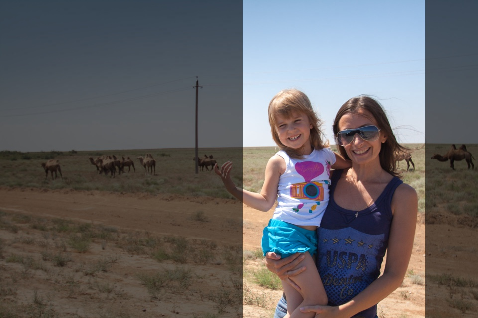

Нужно отчётливо понимать, что люди уже никогда не будут снимать телефонами горизонтальное видео. Человек всегда предпочтёт удобство и простоту. Именно это сделало человека в ходе эволюции. Ну, и отстоящий большой палец, конечно.

По горизонтальным видео с телефона уже легко отличить тех, кто наслаждается процессом и творчеством (не обсуждая конечную ценность этого творчества), а не фактом видеофиксации события.
Скоро таких людей станет совсем мало, они будут создавать закрытые группы в соцсетях, проводить фестивали «для своих», присуждать сами себе премии.